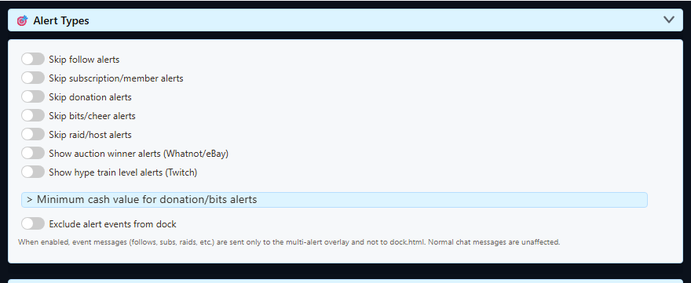
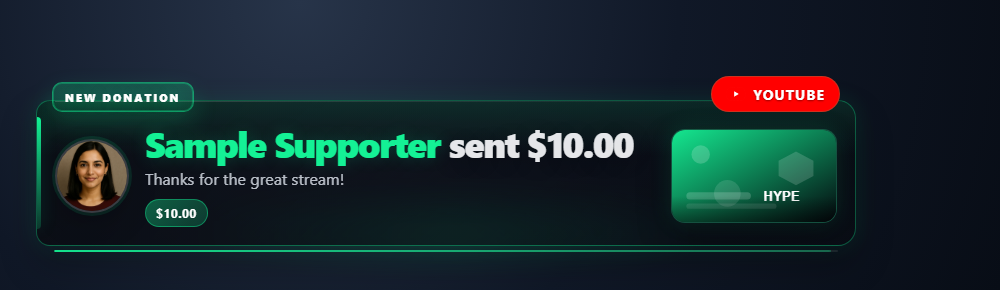

ابدأ بمصدر الحدث
يعرض Multi Alerts أحداثاً التقطها Social Stream بالفعل. ولا يسجل الدخول بنفسه إلى Twitch أو Kick أو YouTube أو TikTok أو أي منصة أخرى.
- صِل مصدر المنصة الذي يوفر الحدث وفعّله.
- أبقِ صفحة ذلك المصدر أو نافذته في التطبيق المستقل نشطة.
- استخدم معرّف جلسة Social Stream نفسه في المصدر والنافذة المنبثقة ولوحة الإرساء ورابط Multi Alerts.
- اختبر تراكب التنبيهات من خياراته قبل فحص أخطاء اتصال المنصة.
تثبت المعاينة الناجحة أن تخطيط التنبيه يعمل. لا يثبت أن مصدر المنصة يملك صلاحية استقبال ذلك الحدث المباشر.
فئات Multi Alerts
| الفئة | أسماء الأحداث الشائعة | ملاحظات |
|---|---|---|
| متابعة | new_follower, follow, followed | يتطلب مصدراً يلتقط أحداث المتابعة وصلاحية المنصة اللازمة. |
| اشتراك | new_subscriber, resub, subscription_gift، والأسماء البديلة للعضوية | يشمل الأحداث المتكررة والمُهداة والشبيهة بالعضوية حيث تكون مدعومة. |
| تبرع / هدية | superchat, supersticker, gift, tip، والأسماء البديلة للتبرعات | قد يستخدم صف دردشة شبيه بالتبرع بدلاً من ذلك hasDonation و donoValue. |
| Bits | cheer, bits | يمكن تصفية المبلغ باستخدام خيار الحد الأدنى للتبرع أو المبلغ. |
| غارة | raid, host, redirect | يعتمد التوفر والتسمية على مصدر المنصة. |
| المزاد | auction_update | تنبيهات الفوز بالمزادات اختيارية. |
| قطار الحماس (Hype Train) | hype_train | تنبيهات قطار الحماس اختيارية وتتطلب صلاحية وصول مؤهلة إلى Twitch EventSub. |
أعداد المشاهدين وإجماليات المتابعين وحالة البث والفاصل الإعلاني تحديثات وليست بطاقات تنبيه عادية. استخدم مرجع الأحداث عند بناء مستهلك API أو تراكب مخصص.
أحداث المنصات الرئيسية
هذه أسماء الأحداث القياسية الحالية عندما يستطيع وضع المصدر المحدد تقديم النشاط.
| النشاط | YouTube | Twitch | Kick |
|---|---|---|---|
| عضو / مشترك جديد | sponsorship |
new_subscriber |
new_subscriber |
| تجديد | resub |
resub |
resub |
| عضوية / اشتراك مُهدى | giftpurchase, giftredemption |
subscription_gift |
subscription_gift |
| الدعم المدفوع | superchat, supersticker, jeweldonation |
cheer، أو صفاً يحتوي على hasDonation |
gift لهدايا KICKs؛ donation لأحداث الدعم أو التبرع. يملأ كلاهما hasDonation. |
| متابعة / تنبيه مشترك عام | new_follower؛ اشتراكات عامة فقط وقد تتأخر عبر API |
new_follower |
new_follower |
| مكافأة قناة | - | reward |
reward |
| غارة / استضافة | - | raid |
مدخل للتوافق فقط؛ ليس اشتراك حدث رسمياً حالياً في Kick |
ملاحظة غارات Kick: يقبل Social Stream بيانات قديمة ببنية غارة أو استضافة للتوافق، لكن كتالوج أحداث Kick الرسمي الحالي لا يتضمن اشتراكاً للغارات أو الاستضافة. لا تجعل سير عمل Kick يعتمد على تلقي أحدها.
الوضع القياسي مقابل WebSocket
| المنصة | الالتقاط القياسي | التقاط WebSocket / API |
|---|---|---|
| YouTube | الرسائل المدفوعة والعضويات وهدايا العضوية وتحديثات المشاهدين وأحداث محدودة تكتشفها الصفحة. | أحداث الدفع والعضوية المشتركة، إضافةً إلى محطات إنجاز الأعضاء وتنبيهات المشتركين العامين الجدد وتحديثات الأعداد المدعومة. |
| Twitch | المكافآت المعروضة في الدردشة وإشعارات الاشتراكات المُهداة وتحديثات المشاهدين وبعض الإشعارات الخاصة بالصفحة. | يضيف EventSub المتابعين والاشتراكات والتجديدات وCheers والغارات والمكافآت وأحداث الأعداد والحالة المدعومة عندما يسمح الحساب والنطاقات بذلك. |
| Kick | الدردشة وعلامات صفحة خفيفة للهدايا والمكافآت وتحديثات المشاهدين. | أحداث المتابعة والاشتراك والهدايا واستبدال المكافآت وKICKs والإشراف وحالة البث الرسمية عند المصادقة. |
يكون وضع WebSocket عادةً الخيار المناسب للتنبيهات التي تعتمد على الأحداث. يظل الالتقاط القياسي مفيداً عند الحاجة إلى الدردشة المعروضة فقط أو عند عدم توفر المصادقة.
تفعيل أنواع التنبيهات المطلوبة
افتح خيارات Multi Alerts من إعدادات Social Stream. للمتابعات والاشتراكات والتبرعات وbits والغارات عناصر مستقلة للتفعيل والنمط والصوت والمظهر. تتطلب تنبيهات المزاد وقطار الحماس تفعيل عناصرهما الاختيارية المخصصة.

- استخدم إضافة التنبيهات إلى قائمة انتظار عندما قد تصل عدة أحداث معاً.
- تحقق من مرشحات المصادر إذا عملت الأحداث في لوحة الإرساء ولم تعمل في Multi Alerts.
- تحقق من مرشحات الحد الأدنى للمبلغ أو التبرع عند غياب التبرعات الصغيرة أو Cheers.
- تفاعل مع صفحة المتصفح مرة واحدة إذا حظرت قواعد التشغيل التلقائي صوت التنبيه المخصص.
المعاينة قبل البث المباشر
استخدم عناصر المعاينة للتحقق من الفئة المحددة والنص والمبلغ والوسائط والصوت والحركة وسلوك قائمة الانتظار.

الحقول التي تستخدمها كل أداة
| الأداة | قاعدة التوافق |
|---|---|
| Multi Alerts | يصنّف القيم القياسية event الأسماء والأسماء البديلة و hasDonation، وحقول العضوية، وقيم مختارة من meta إلى فئات مشتركة. |
| Event Flow | طابق بالضبط type, event، والحقول التي يصدرها مصدرك. استخدم أداة Test Message قبل الاعتماد على حدث مباشر. |
| تحويل النص إلى كلام | تُتخطى صفوف الأحداث افتراضياً ما لم تكن شبيهة بالتبرعات. أضف &readevents عندما ينبغي نطق رسائل الأحداث غير المرتبطة بالتبرعات، ثم طبّق مرشحات تحويل النص إلى كلام العادية. |
| وعاء التبرعات / مقياس الهدف | يستخدم الوضع العادي مبالغ التبرعات. ويمكن لوضع الحماس أيضاً احتساب حقول العضوية والتجديد والعضويات المُهداة. |
| تراكب مخصص / مستهلك API | استخدم حقول البيانات القياسية من مرجع الأحداث. اقبل الأسماء البديلة الموثقة فقط للتوافق مع الإصدارات السابقة. |
استخدم إنشاء رسائل اختبار للتحقق من الحدث المتوقع وقيمة وصفات Event Flow لأمثلة أتمتة عملية.
ملاحظات إعداد المنصات
| المنصة | أول ما يجب فحصه | الدليل |
|---|---|---|
| Twitch | سجّل الدخول بحساب المذيع أو المشرف المصرّح له وأبقِ EventSub متصلاً. | إعداد Twitch EventSub |
| Kick | اختر وضع المصدر بعناية وأكمل المصادقة عندما تتطلبها الأحداث الرسمية المطلوبة؛ ولا تتوقع حدث غارة رسمياً. | إعداد Kick والمصادقة |
| مصادر أخرى | تأكد من أن المصدر المحدد يصدر نوع الحدث فعلياً، وليس رسائل دردشة فقط. | المواقع المدعومة |
عندما يغيب تنبيه حقيقي
- تأكد من أن المصدر استقبل الحدث في سجله الخاص أو لوحة الإرساء أو مخرجات API.
- تأكد من استخدام المصدر وصفحة Multi Alerts معرّف الجلسة وكلمة المرور نفسيهما.
- تأكد من تفعيل تلك الفئة وعدم استبعادها بمرشحات المصدر أو القناة.
- تحقق من مرشحات الحد الأدنى للقيمة للتبرعات وbits.
- في Twitch أو Kick، سجّل الدخول مجدداً إذا عملت الدردشة ولم تعمل الأحداث المحمية.
- أبقِ نافذة المصدر نشطة مدة تكفي لمراقبة حدث حقيقي؛ فالمعاينة وحدها ليست اختباراً شاملاً للمنصة.
إذا شاركت عدة أجهزة أو أوضاع اتصال، فراجع الجلسات وكلمات المرور وأوضاع التمرير.